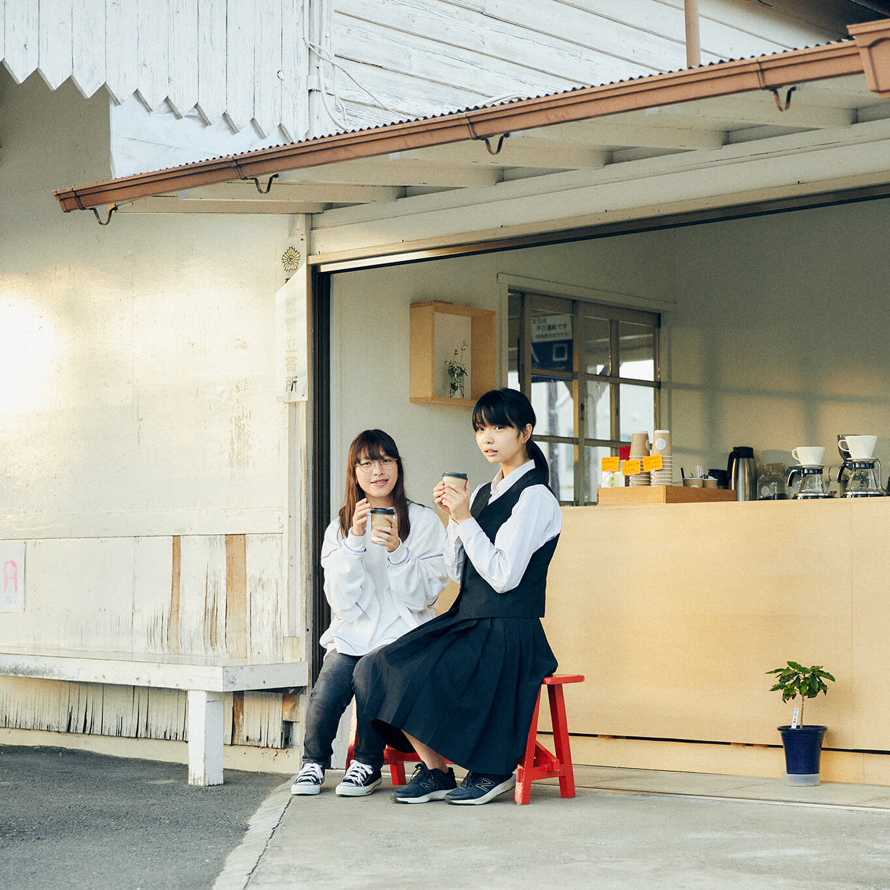
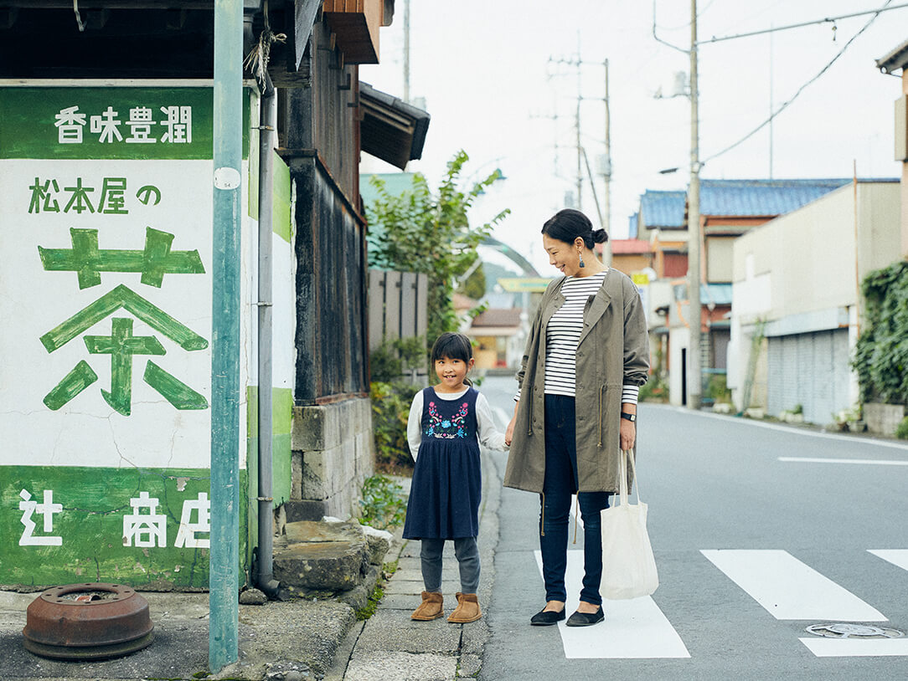

- ホーム
- 暮らす
ともに、暮らすまち
工業地帯に支えられることで財政的には比較的恵まれた市原市も、日本中の多くの地域同様に人口減・高齢化などの課題を抱えています。財政だけでは解決できないこれらの課題に向き合うため、市原ではコミュニティを中心に市民と行政がお互いの役割を越えて取り組んでいます。また、移住してくる方とそれを受け入れる住民の間にも新しいコミュニティが生まれ始めています。
このページでは市民と行政、住民と移住者など、様々な立場のひとが「ともに、暮らすまち」としての市原をご紹介します。
移住者インタビュー
市原での実際の暮らしを知っていただくため、
実際に移住された方のインタビューをご紹介します。




子育て・仕事・暮らし
教育現場へのICT環境普及の取り組みや小学生向けの国際交流事業、新たに仕事を探す人への支援、安心安全に関わる防災・防犯の取り組みなど、市原市の「子育て・仕事・暮らし」情報をまとめています。
移住者向け
支援制度
市原に移住するためのサポート制度をご紹介します。
いちはら三世代ファミリー定住応援事業
子育て世帯が安心して暮らせるまちへ向けて、親世帯の近くで家族で支え合って暮らしたいという子育て世帯を応援する、新たな制度を令和元年10月1日から開始しました！
子育て世帯が、市内で住宅を取得するとき、その親世代が市内定住の場合に住宅取得の一部を補助します。いちはら結婚新生活応援事業
若者が安心して暮らせるまちへ向けて、結婚して新生活をスタートさせたいという若者を応援する、新たな制度を令和元年10月1日から開始しました！ 若者が結婚を機に市内に定住するとき、新生活に必要となる住居費や引っ越し費用の一部を補助します。
結婚への支援、妊娠・出産・子育てへの支援も充実
婚活inいちはらのような結婚への支援制度から、プレママ教室、マタニティクックについて、産後ケア事業など出産・子育てに関する支援制度まで、若い世代へのサポートも充実しています。
空家について知りたい方はこちら